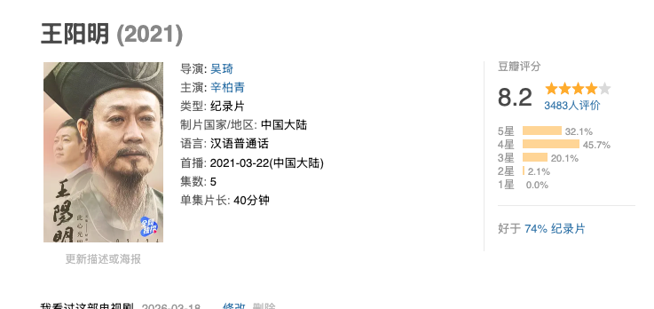

時璃風医詩🌈🏳️🌈
@hagishigure
6。我第一次知道还有人看王阳明几十年都不看一次陆九渊。但凡看一眼陆九渊的心即理和致良知呢。

Tristan
@wsygc
断断续续把《王阳明》纪录片看完了，原来"知行合一"被我误解了几十年。
那个"知"不是知识，不是认知，是——良知。
王阳明说的从来不是"学到了就去做"，而是"当你真正触达内心的是非之感，行动自然发生"。
差一个字，差了整个理解。 https://t.co/i2qMJrA4Yd